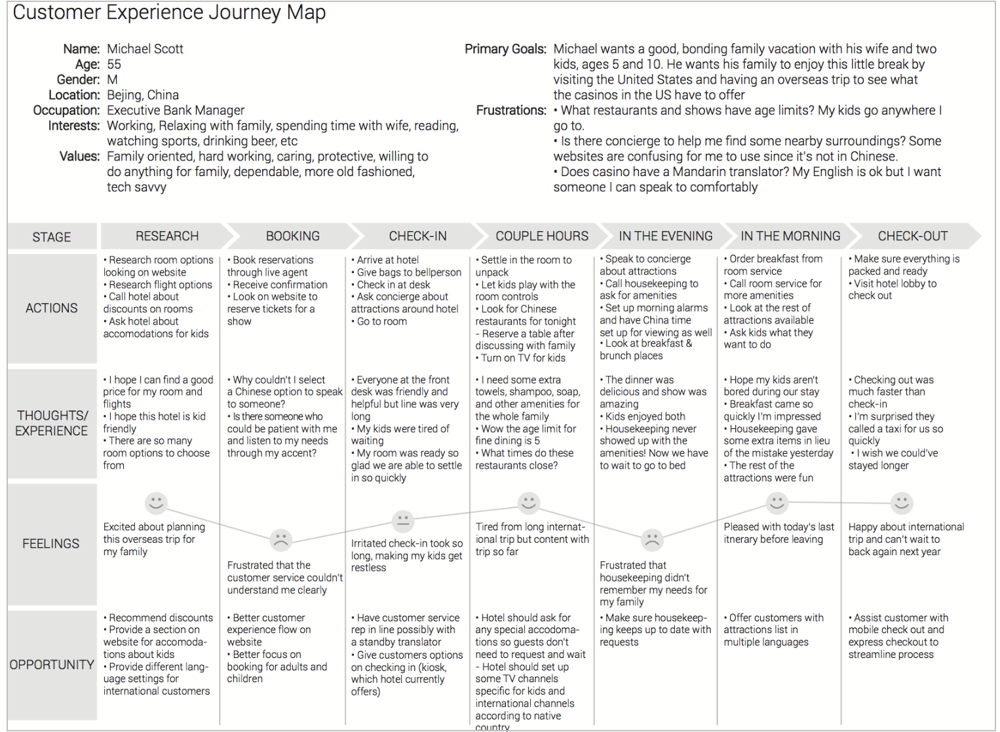
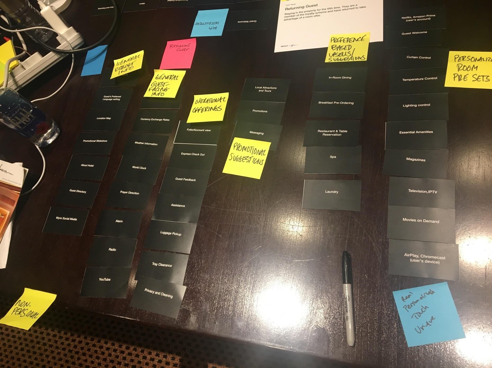
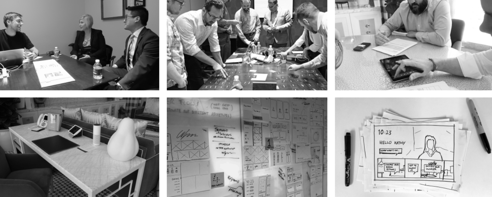
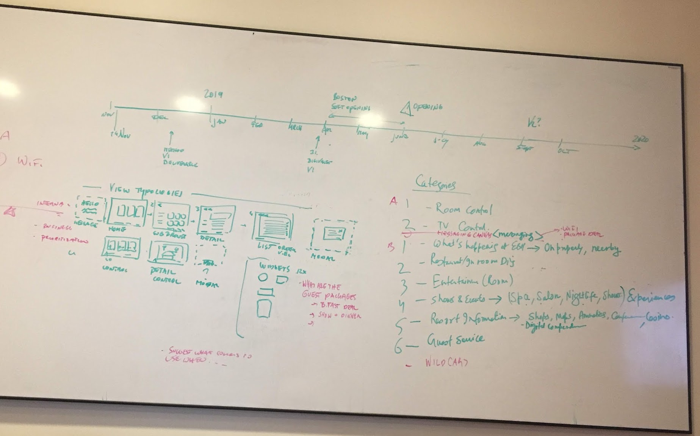
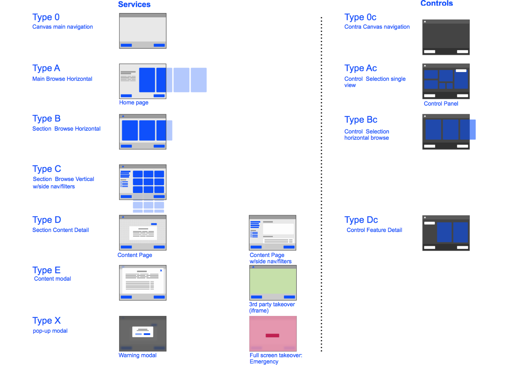
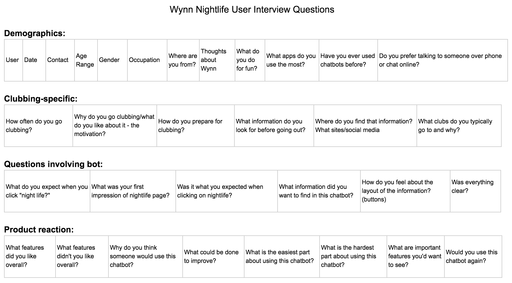
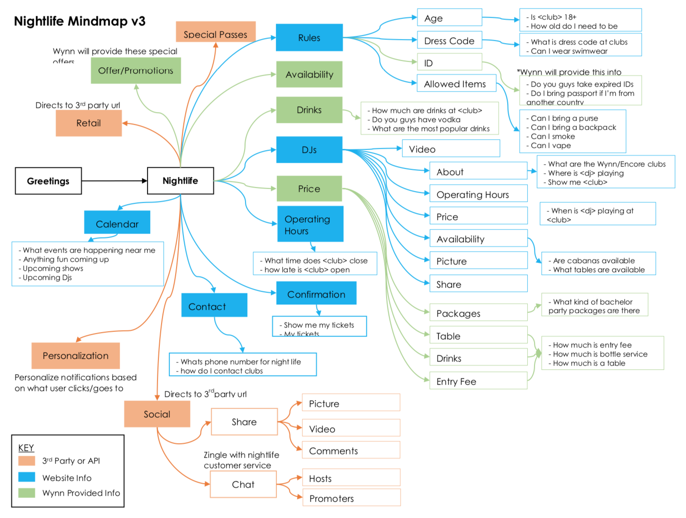
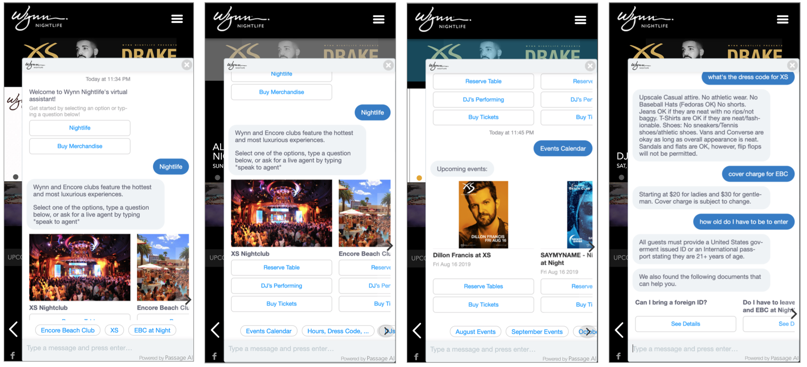
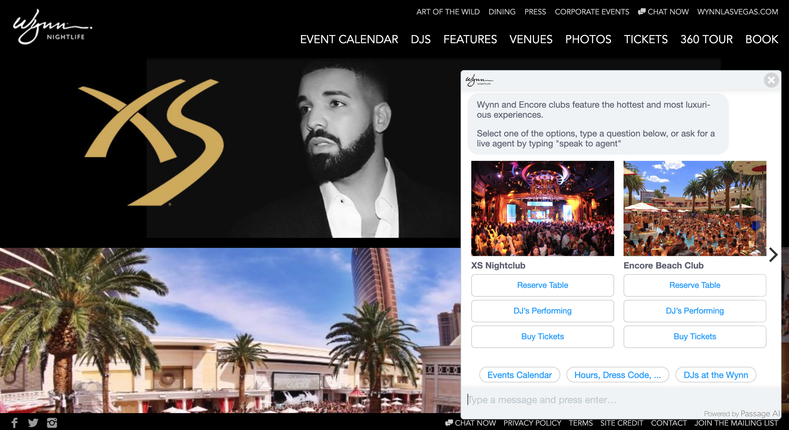

As a current Computer Science major, I discovered the strong connection between software and user experience, which led me down the path of UX and UI.
As a Computer Science major, I discovered the strong connection between software and user experience, which led me down the path of UX and UI. I never truly knew what I wanted to pursue in technology until I began diving deeper to discover that any great software or well designed product stems from the UX industry. A sleek, efficient and functional user experience, combined with a beautiful user interface, is what truly makes a great product. As a designer, it's in my nature to combine these elements to produce something that is both breathtaking and user/business defined.
Define the goal and problem statement. Who are the business stakeholders? What are the requirements? What is the scope? Meet with the business and product team to discover and define the project.
Research
Conduct research by interviewing business stakeholders and users to understand their motivations, values, and needs. Benchmark features by conducting comparative analysis and look at competitors. Focus on best practices and utilize well-known UX research resources.
Document
Analyze the research and gather the key takeaways. What's important? What's being prioritized? Begin brainstorming and creating the information architecture and sitemaps.
Design
Create sketches and flows, and then continue to design high-fidelity mockups based on the key takeaways. Prototypes can be created to represent the user experience and overall flow.
Deliver
Present the product to stakeholders for feedback and approval. Iterate the designs based on feedback. Through iteration cycle, A/B testing can be done as well as analyzing the usage and user behavior through data analytics.
Contact
email: hello@demihe.com
UNLV Guest Wifi Portal
Process
1. Define
The goal of this project is to redesign the UNLV (University of Nevada, Las Vegas) Guest Wifi Portal to be easy to connect, informative, and UNLV branded. The old portal was last updated in 2005 and contained
extraneous and repeated information. With the new design, the information has to be straightforward and
reflect UNLV branding. This portal serves over 4,000 guests, students, staff, and faculty per day at UNLV.
Requirements:
Keep important information
“Only campus guests should connect…” message
Availability section
IT Help Desk contact info
User Agreement
Remove repeated/unnecessary information
Remove CSUN sponsorship
Follow UNLV’s design style guide, i.e. use UNLV official colors and fonts
Old Portal
2. Research
In the research for this project, I asked the UNLV Networking Engineering department, who created the initial portal, about the users' demographics and how often the portal is used. As mentioned above, users include guests, students, staff, faculty. Majority of the users are guests who are visiting the UNLV campus, who do not study or work at UNLV. These guests include possible incoming students, inquiring parents, visiting professors, visiting speakers, affliated UNLV members, and so forth. Most users are 18 years old and above. According to a network engineer, the portal is used by over 4,000 guests per day.
3. Document
Analzying the research, it was determined that typical guest users connect to the guest wifi to learn more about UNLV, or use the wifi to work along with someone affliated at UNLV. Thus, it was important to distinguish the availability section for these users, since their time frame on the Wifi is limited. Since this portal is very simple and contains small amounts of information, the design needed to straightforward and quick to connect to accommadate for the guests.
4. Design
Based on the old portal's design and user research, the brainstorming and sketching began. Since there was only one single page, I kept the sketches and wireframes simple.
Sketches/Wireframes
5. Deliver
The deliverable is shown as below.
Users should quickly understand how to connect to the guest wifi, as well as acknowledge the specific
time frame available for them. This design is now currently being used as the official UNLV Guest Wifi Portal.
For this proof of concept, the goal was to create a mobile UI that presented two things: nutritional results of a scanned food item (scanned through phone) and relevant ads displayed within the app. Once an item is scanned, results will display nutritional information such as fat, carbohydrates, protein, and so forth. To gain revenue through this app, the scanning and results page should display suggested ads similar to the scanned food item or healthy food alternatives.
Requirements:
Create a categories page for users to select item they want to scan
Create a meter that displayed fat % in results screen
Display specific nutrition results, such as fat, carbohydrates, sugar, protein, etc
Incorporate relevant ads that are tailored or similar to the item being scanned
Implement two different styles for the UI
2. Research
To understand the user demographic and what a typical nutritional app looks like, I looked through the Play Store and App Store to see what was currently available and interviewed multiple people. From what I've seen, many nutritional apps not only incorporate nutritional results, but also the ability to input weight, weight advice, calendar options, etc. Looking through the reviews for multiple apps, the user demographic includes users who are trying to lose weight, users who are already fit and trying to maintain their current status, users who are looking to be healthier, etc. Users ages fit within a broad range, from mid 20s to mid 40s, based on interviews around the department I was working in.
3. Document
Analyzing the research, it was decided that the app should be dedicated to just strictly nutritional results and that it should be geared towards the younger audience, from mid 20s to late 30s. The app will be used by users who are more comfortable with technology, as the proof of concept involves a scanning device that has to be connected to the phone.
4. Design
Sketches/Wireframes
5. Deliver
Design A:
The theme in this design reflects the typical, bright, colorful palette of fruits
and vegetables. Created with this palette in mind, the UI for the app appeals to the user in a way of reminding them what an app about nutrition should look and feel, as if they're in a grocery store!
Design B: This theme takes a different turn from the normal color spectrum of foods.
Instead, it reflects a more futuristic, modern design that is tied with an overall white, green, and blue palette. This whole minimal, transparent trend contrasts a regular, traditional nutritional app design.
This senior design project consisted of eight team members creating a software suite called Convention Logistics Tracker (thats me, second to the left! One member is not pictured). We won First Place at the 2017 Senior Design Competition for the Computer Science category. I was an Android developer on this team, and focused mainly on the app development and UX/UI design for the app.
The suite contains three software packages: organizer portal, exhibitor portal, and consumer app. In the organizer portal, conference organizers are able to update app information and conference details, such as floor plans, weekly/daily schedules, exhibitors lists, news, and so forth. The exhibitor portal is either filled out by a conference organizer or the exhibitor themselves. Here, exhibitors can upload a description, company logo, and news items for their own booth. For the consumer app, the other app developer and I focused on creating an Android app that displayed all the data pulled from the Exhibitor and Organizer portal (based on the self built REST API my team had created). Features of the app include News, Exhibitors List, Floor Plan, and Schedule.
Process
1. Define
The origination of developing a software suite for a convention stemmed from one of the team members, who had attended CES 2016. While CES had an app available for attendees, he faced multiple issues with it, from slow and late updates, to poor user experience. As a team, we identified some main problems we wanted to target in our project:
Conventions require massive amounts of manpower and time to plan
Securing a convention venue
Handling exhibitor and attendee registration
Organizing shuttling services and parking
Planning larger conventions is cumbersome without proper organization
Registration becomes tedious to handle
Overhead and complexity increase with the size of the convention
There were many functional requirements for this project. To minimize the amount of text, I will only focus on those for the app.
Requirements for Android app:
News section
Exhibitor's List
Floor Plan
Schedule
2. Research
After identifying the problems, we researched online to find the current solutions from similar
companies which were actually not NOT viable solutions:
Paper maps dominate as the current standard but:
Printing paper maps and brochures come at a hefty cost; 170 trees
These physical copies are bulky and wasteful; 10 pounds
Organizing shuttling services and parking
Other consumer applications in the market are spotty and non-reusable
These per-convention applications lack flexibility
Developing a new application for each hosted convention is inefficient
We researched more about the conferences industry and found 44% of revenue comes from exhibit sales and design services. We created a few use case diagrams to understand who our audience
would be and how they will interact with our system. Typical users are business owners, industry leaders, investors, company employees, buyers, sellers, etc. Going to a convention or conference means business.
3. Document
Based on the research, it was noted that we needed to appeal to the current market by providing new and smarter alternatives to the existing solutions. For the app, we needed to figure out a way to display the four required components: News, Exhibitors List, Floor Plan, and Schedule. Our features would have to outdo the competitors, as shown in the chart below:
4. Design
The other app dev and I worked together in Android Studio to build the app. We created some sketches and wireframes before building the skeleton of the app, making sure we included the featured app requirements. Since the app did not require a very complex UI, we made the user experience very straightforward. For the branding of this project, I created the logo for the suite, which set the color scheme and font choices in stone for the other components of the software suite.
Sketches/Wireframes
5. Deliver
My team worked incredibly well together and worked very hard to create a solid deliverable. The front end team and back end team worked seamlessly to provide a reliable REST API for the app team. We presented our project at the Senior Design Competition in front of 5 judges of different academic backgrounds. We uploaded the app to the Play store and the site and app were live at that time. In the final product, we tested our software suite by using it live during the Senior Design Competition as a conference. However, due to server costs, we were unable to keep the portals and app live past an extended time.
Wynn Las Vegas is implementing an In-room iPad experience in their new property Encore Boston Harbor (opened June 2019). The iPad contains many functionalities and features, including room controls (lights, curtains, temperature, etc), TV/movie control, and information about dining, spa/salon, amenities, etc. The current deployment is Phase 1, an out of the box solution created by an external vendor. Phase 2 will consist of a new redesign led by me and another external vendor. It is being developed now and will be released in December 2019.
Process
1. Define
The goal of this project is to understand the needs of Encore Boston Harbor guests and create a simple tablet interface that addresses those needs. The task at hand was to improve the UX and UI of the outdated out-of-the-box solution provided, such as decreasing the number of navigation types, updating the bad information architecture and fixing the overcrowding of features on certain screens.
Overall, the app on the tablet needed to be user friendly, intuitive, have fast response time, easy to see and handle with buttons, easy to locate, font large enough to read, and screen navigation kept simple.
In the discovery phase, I interviewed business stakeholders to understand their needs, goals, and why the tablet was being added to the rooms and determine what features were being kept. While also acting as the product owner for this project, I helped gather the business and product requirements.
2. Research
To give context, Wynn is a luxury Forbes 5 Star hotel focused on giving the best customer experience with great attention to detail. While Encore Boston Harbor is a new property with the same values, we needed to know the new demographics and user base, as they’re slightly different from Wynn Las Vegas’. Customer base is 30-60 years old, with the average leaning towards 55 years old. Types of customers include regional customers, business guests, convention guests, international travelers, and most importantly casino customers, who are the largest user base. Using this information, we created various customer journeys to follow.
To conduct comparative analysis, I looked at competitors’ in-room tablet experiences such as Aria and Cosmopolitan in order to gauge the different feature sets and UX for their tablets. Aria included incredible amounts of information through numerous navigational tabs, as well as the ability to order room service and book reservations through the tablet. The Cosmpolitan’s tablet experience was more simple and only contained links to their website, with no integrated systems to allow ordering via tablet.
An interesting note is where these tablets were located inside the guest rooms. Intuitively, the Aria tablet was placed by the bed on the adjacent nightstand. However, Cosmopolitan’s was located right next to the doorway. One question that came up during a stakeholder interview was how does the tablet fit within the room itself? Is it supposed to blend in and act as an integrated part of the room? Was it a random device that stands out awkwardly? In Wynn’s context, the tablet has to be helpful in giving the best customer experience through the hotel.
During this research process, a large workshop containing stakeholders, product team and designers were brought together for user testing sessions on the Phase 1 solution to find any pain points and challenges, and a card sorting exercise to prioritize features. To emulate how guests are feeling during their stay, user testing sessions were held inside some of the guest suites.



3. Document
Once all the information was gathered, we began to focus on mapping out an information architecture to address the requirements and research conducted. Here are a few key takeaways:
Comparative analysis: Overcrowding of navigation in Aria’s tablet. Too much information given at once, which overwhelms and confuses user. Use of various navigation structures such as horizontal and vertical, which were similar to the navigation issues in Phase 1 solution.
Prioritizing features: Based on card sorting, user testing sessions, and discussions with stakeholders, we prioritized Room Controls and Media Controls. These needed to be accessible at all time.
Navigation structure: Implement a simple navigational structure to maintain consistency across all screens.
Information overload: With the amount of information and functionality included, the goal was to avoid overcrowding the screen and overwhelming the user with all the options.
Development limitations: Many integrations needed to be built out, from the vendor to utilize our SiteCore CMS APIs to reservation and housekeeping systems. These were defined by both timeline limitations and development resources.


4. Design
Using this information architecture, we designed wireframes, mockups and rapid prototypes, which were validated in user testing sessions with real guests. In the design iterations, we addressed different types of navigation structures and placement of main features to improve readability and usability. For room/media controls and overcrowded screens, we enhanced font size and placement of our designs based on our demographics. We also took into consideration the information being pulled from our SiteCore CMS to ensure they were being extracted and displayed correctly. We incorporated all screens with the Wynn branding and visual design.
The Wynn Nightlife Chatbot is a chatbot designed to easily answer questions about the Nightlife at Wynn Las Vegas. Since this is an interaction bot, it features both text and UI visual elements for users to type and click on images, links, menus and buttons. Some example questions users can ask include what time is XS open, when is Marshmello playing, is Alesso playing on April 4, what’s the dress code for Encore Beach Club, how much are tickets, etc.
Process
1. Define
The goal is to easily and successfully answer a user’s question via automation and provide a revenue channel for Nightlife merchandise to benefit the business. Since it’s currently difficult to navigate and find information on the Wynn Nightlife website, this chatbot serves to provide less distractions and more personalized functions to help users find what they need.
In the discovery phase, I interviewed the Nightlife business stakeholders to understand their needs, goals, and what were the current pain points on the nightlife website. I helped gather the business and product requirements. I also managed the communication and collaboration with the chatbot vendor.
2. Research and Chatbot Design
As the UX Designer, Istarted with researching the audience/user base for our Nightlife industry at the Wynn, as well as looking at popular chatbots such as Bank of America’s Erica, Domino’s Pizza bot, and Ebay bot. These bots lived on platforms such as Facebook Messenger, Apple Business Chat, and within their respective mobile apps.
After accumulating and observing the different types of features each bot had to offer, I began to create mind maps to map out user flows and provide lists of example intents (subject or topic that needs to be matched to the entered text) and utterances (any action on the intent that chatbot must respond to). Listing out the possble utterances paved the chat ux flow.
Working with the developer from the chatbot vendor, we created a beta version and conducted user interviews and user testing. We worked with our Nightlife team to provide content in a knowledge base format and utilize events/ticketing APIs for the chatbot to consume.


3. Deliver


The Wynn Nightlife Chatbot went live on both website and Facebook Messenger in April 2019. To interact with the bot, you can visit wynnsocial.com or the individual nightlife venues: XS, Encore Beach Club and Wynn Nightlife
Use this area of the page to describe your project. The icon above is part of a free icon set by Flat Icons. On their website, you can download their free set with 16 icons, or you can purchase the entire set with 146 icons for only $12!